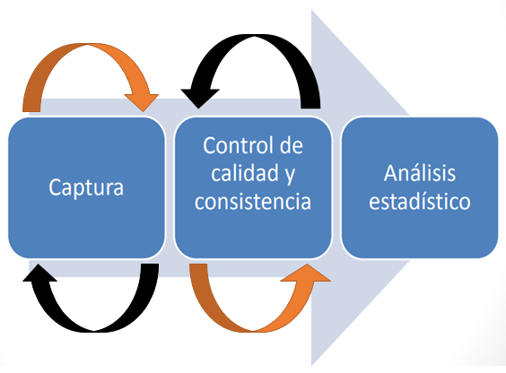
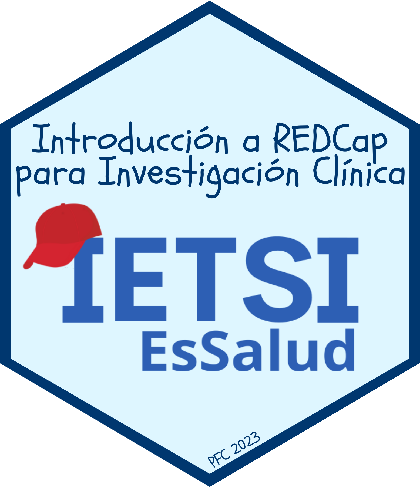
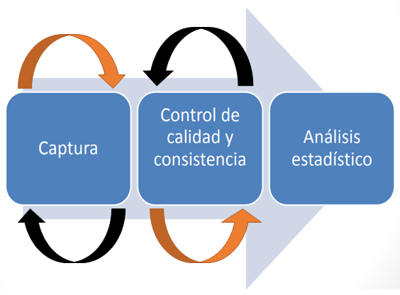
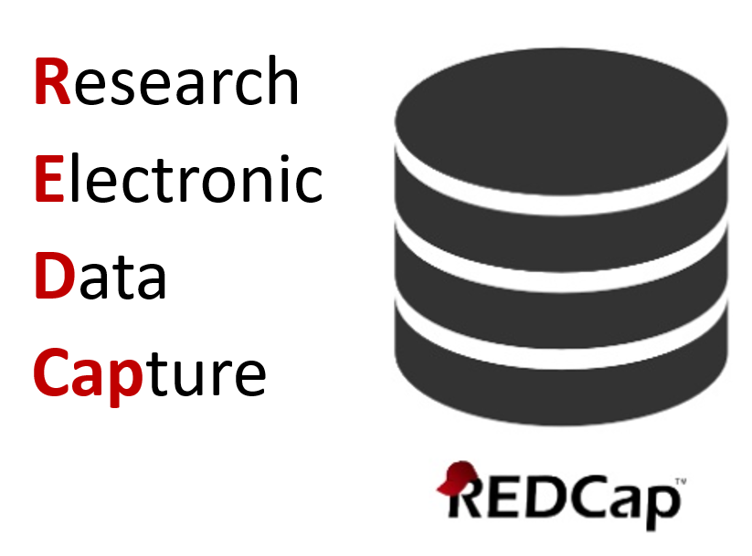
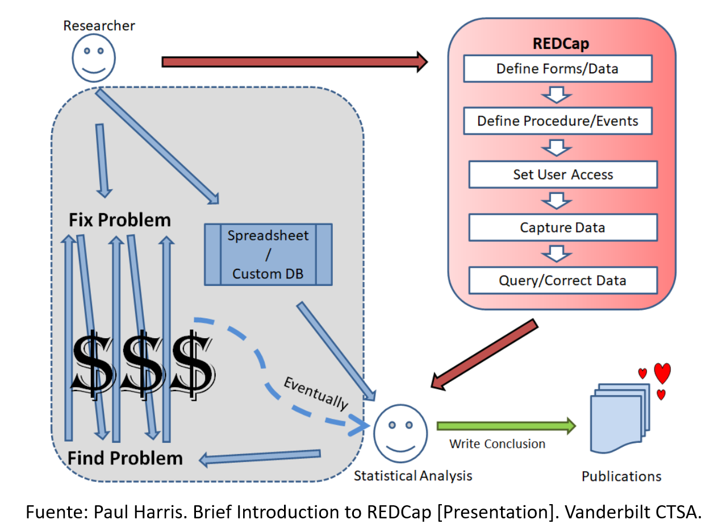
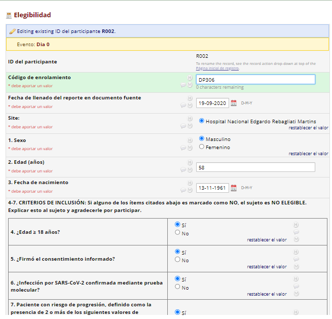
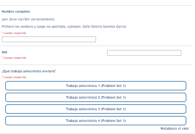

Curso: Introducción a REDCap para Investigación Clínica
Documento fuente o fuente de datos
CRF, eCRF o encuestas
Control de calidad y consistencia:
Proceso iterativo que requiere diferentes sub-procesos.
Algunas herramientas de captura de datos cuentan con facilidades para realizar estas tareas.


Captura electrónica de datos
Basado en web
Construido para investigación
Cumplimiento con estándares HIPAA
Amigable para el usuario
INS REDCap
Aplicativo web gratuito para construir y administrar todo los tipos de datos de investigación:
Herramienta desarrollada por la Universidad de Vanderbilt.
Diseñado con altos niveles de seguridad y para facilitar las buenas prácticas de gestión de datos para investigación biomédica.
Instituciones prestigiosas (FDA, EMA, NIH, etc.) reconocen su uso.
REDCap desde noviembre de 2020.
Instalado en servidores locales de EsSalud.
Administración:
Uso actual:
Provee a los investigadores una herramienta que permite…
Forma tradicional vs. REDCap
REDCap, en cambio, es

personal de campo o de laboratorio desde el documento fuente.Los CRF son completados por el personal del estudio.

Las encuestas son completadas por el mismo participante.

Además de esto, tiene una infinidad de funcionalidades bastante útiles para diferentes niveles de uso y usuarios.
¿Todos recibieron el correo para crear su contrasena nueva?
Revisar su Bandeja Principal y su SPAM.
Si usan gmail, yahoo o essalud, probablemente no haya llegado.
outlook o hotmail.¿Todos pueden loguearse en el aplicativo web de REDCap IETSI?
Sugerencia: Pongan en Favoritos a la web de REDCap IETSI.
05:00
¿Preguntas?
Tomemos un descanso de 5 minutos…
Estire las piernas …
Deje de ver las pantallas …
… cualquier , las del celular también.
05:00
Curso: Introducción a REDCap para Investigación Clínica